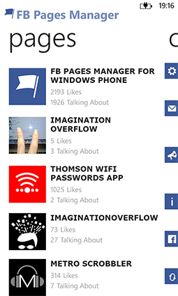
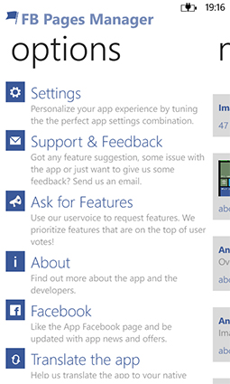
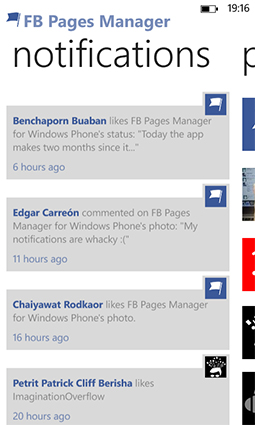
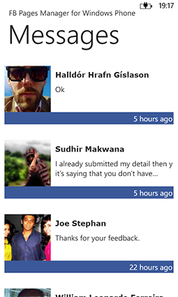
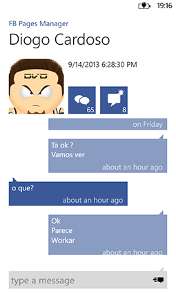
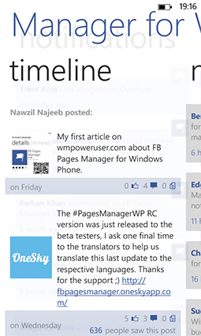
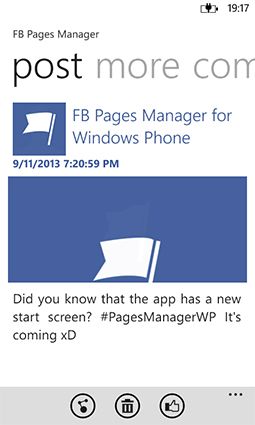

FB Pages Manager
A beautiful Windows Phone app to manage all your Facebook pages
- 
- 
- 
- 
- 
- 
- 
Full ($1.99)

Lite (Free)
Features
- Responsive, mobile-friendly layout
- Fully configurable branding [Example Site]
- Twitter feed and follow button
- Smooth jQuery Screenshot slider
- Just add your own content!
- Download from CodePlex
The best (and only) Windows Phone 7 App site template I've ever used!
Nick Harewood, App Designer